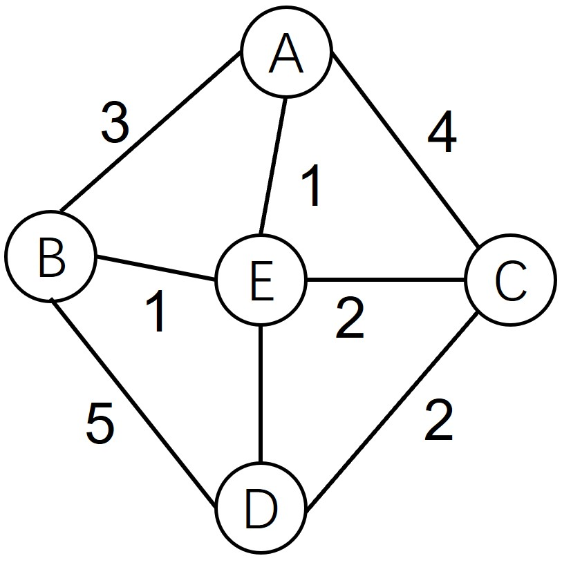

327 floyd算法1
- 问题描述
- 算法原理
- floyd和dijkstra的比较
问题描述
floyd算法也是用于求图中的最短路径的，该算法基于动态规划不断更新最短距离，直到遍历所有的点。

算法原理
该算法的流程相当简单，假设map[i][j]是当前i到j的最短距离，如果存在某个中间点k使得map[i][j]>map[i][k]+map[k][j],则更新map[i][j],用数学表达式则为：
- 从任意一条单边路径开始。所有两点之间的距离是边的权，如果两点之间没有边相连，则权为无穷大
- 对于每一对顶点 u 和 v，看看是否存在一个顶点 w 使得从u到w再到v比已知的路径更短,如果更短则更新它
- 重复上述流程直到计算出所有值
floyd和dijkstra的比较
- 时间复杂度： 时间复杂度这个名词你可能有点陌生，它实际上就在指完成算法所消耗的时间。设想一个矩阵有3行3列，那么就有9个值需要更新，每次更新需要遍历所有中间点，那么就需要更新9*3=27次，
实际上就是3的立方，也就是说，对于n个顶点的图，floyd求解需要运行n3次，这对于算法来讲，计算量很大。而dijkstra则小很多，只需要更新n个顶点，每个顶点比较n次，也就是n2次
- floyd只能一次更新所有最佳路径值，而dijkstra可以一次只计算某个源节点到其它路径的最短距离，如果求解所有路径，那么时间复杂度是相同的
- dijkstra不能处理负权重，而floyd可以
小结
掌握floyd算法的原理
掌握floyd和dijkstra的主要差异
习题
- floyd算法是最优解吗？
- 你知道为何dijkstra不能处理负权重吗？查阅相关资料并和同学讨论
打赏
赠人玫瑰，手有余香。您的打赏是我们前进的动力！